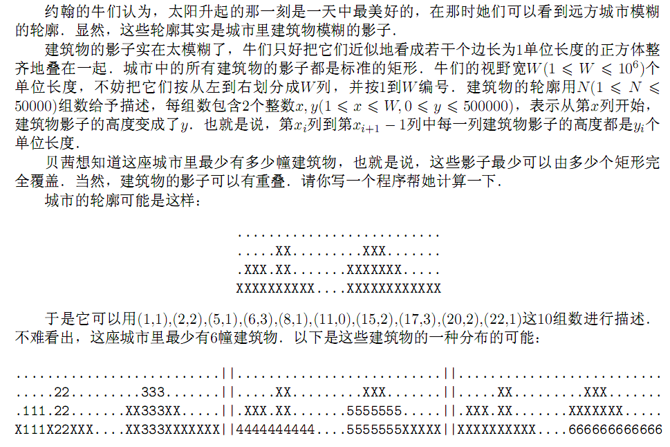

F.A.Qs
Home
Discuss
ProblemSet
Status
Ranklist
Contest
入门OJ
ModifyUser
Xeonacid
Logout
捐赠本站
Notice:
注册本OJ方式请见https://www.lydsy.com/JudgeOnline/wttl/thread.php?tid=5671
Problem 1628. -- [Usaco2007 Demo]City skyline
1628: [Usaco2007 Demo]City skyline
Time Limit:
5 Sec
Memory Limit:
64 MB
Submit:
646
Solved:
502
[
Submit
][
Status
][
Discuss
]
Description

Input
第一行给出N，W
第二行到第N+1行:每行给出二个整数x,y，输入的x严格递增，并且第一个x总是1
Output
输出一个整数，表示城市中最少包含的建筑物数量
Sample Input
10 26
1 1
2 2
5 1
6 3
8 1
11 0
15 2
17 3
20 2
22 1
INPUT DETAILS:
The case mentioned above
Sample Output
6
HINT
Source
Silver
[
Submit
][
Status
][
Discuss
]
HOME
Back